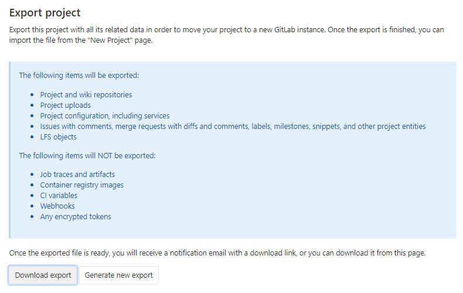

Gitlab代码仓库的备份与恢复
一、Preface
GItlab上的代码仓库需要进行定期的导出备份，并且可以随时进行恢复
二、API接口备份代码仓库数据
gitlab提供导出代码仓库指定资源的API接口
| 支持代码仓库导出的gitlab资源 | 不支持代码仓库导出的gitlab资源 |
|---|---|
| Project and wiki repositories | Build traces and artifacts |
| Project uploads | Container registry images |
| Project configuration, including services | CI variables |
| Issues with comments, merge requests with diffs and comments, labels, milestones, snippets, and other project entities |
Webhooks |
| Design Management files and data | Any encrypted tokens |
| LFS objects | Merge Request Approvers |
| Issue boards | Push Rules |
| Awards |
1、通过API接口
① 调用生成Export的接口
接口及参数
POST /projects/:id/export
| Attribute | Type | Required | Description |
|---|---|---|---|
id |
integer/string | yes | The ID or URL-encoded path of the project owned by the authenticated user |
description |
string | no | Overrides the project description |
upload |
hash | no | Hash that contains the information to upload the exported project to a web server |
upload[url] |
string | yes | The URL to upload the project |
upload[http_method] |
string | no | The HTTP method to upload the exported project. Only PUT and POST methods allowed. Default is PUT |
curl --request POST --header "PRIVATE-TOKEN: <your_access_token>" https://gitlab.example.com/api/v4/projects/1/export
②调用获取Export生成状态的接口
接口及参数
| Attribute | Type | Required | Description |
|---|---|---|---|
id |
integer/string | yes | The ID or URL-encoded path of the project owned by the authenticated user |
curl --header "PRIVATE-TOKEN: <your_access_token>" https://gitlab.example.com/api/v4/projects/1/export
③下载Export
接口及参数
GET /projects/:id/export/download
| Attribute | Type | Required | Description |
|---|---|---|---|
id |
integer/string | yes | The ID or URL-encoded path of the project owned by the authenticated user |
curl --header "PRIVATE-TOKEN: <your_access_token>" --remote-header-name --remote-name https://gitlab.example.com/api/v4/projects/5/export/download
④执行脚本
#/bin/bash
gitlab_url=http://gitlab.apps.okd311.curiouser.com/
gitlab_access_token=*****
gitlab_api_version="api/v4"
for project_id in $(curl -s -XGET ''"$gitlab_url"''"$gitlab_api_version"'/projects?simple=true&order_by=id&sort=asc' -H 'private-token: '"$gitlab_access_token"'' | jq '.[].id')
do
curl -s -XPOST ''"$gitlab_url"''"$gitlab_api_version"'/projects/'"$project_id"'/export' -H 'private-token: '"$gitlab_access_token"'' > /dev/null
if [[ `curl -s -XGET ''"$gitlab_url"''"$gitlab_api_version"'/projects/'"$project_id"'/export' -H 'private-token: '"$gitlab_access_token"'' | jq '.export_status' ` =~ "finished" ]];then
curl -s -O -XGET ''"$gitlab_url"'/'"$gitlab_api_version"'/projects/'"$project_id"'/export/download' -H 'private-token: '"$gitlab_access_token"'' ;
echo hahah ;
else
echo test;
fi
done
2、通过UI界面
①UI路径
仓库页面-->Settings-->General-->Advanced-->Export project按钮
②点击Export

③当Export生成后会发送带有Export下载链接的邮件给代码仓库的维护者
④(可选)后续还可以在UI界面上点击下载Export

三、命令行备份gitlab实例数据
gitlab提供了相应的命令可以进行备份与恢复。
1、备份
①命令
二进制方式或docker方式部署的
版本>= GitLab 12.2
sudo gitlab-backup create # 或者 docker exec -t <container name> gitlab-backup create版本 < GitLab 12.1
gitlab-rake gitlab:backup:create # 或者 docker exec -t <container name> gitlab-rake gitlab:backup:create
源代码方式部署的
sudo -u git -H bundle exec rake gitlab:backup:create RAILS_ENV=production
使用helm部署在k8s中的
使用helm部署的，GitLab task runner容器中有个一个工具脚本可进行备份
kubectl exec -it <gitlab task-runner pod> backup-utility
生成的备份文件的信息
- 备份文件的路径：默认
/var/opt/gitlab/backups，可在config/gitlab.yml配置文件设置backup_path进行控制 - 备份文件名规则：默认
[TIMESTAMP]-版本_gitlab_backup.tar
②支持备份的gitlab实例数据
- Database
- Attachments
- Git repositories data
- CI/CD job output logs
- CI/CD job artifacts
- LFS objects
- Container Registry images
- GitLab Pages content
- Snippets
- Group wikis
③命令行的备份策略参数
默认的备份策略实际上是使用Linux命令tar和gzip将数据从相应的数据位置流式传输到备份。在大多数情况下，这可以正常工作，但是在数据快速变化时可能会导致问题。例如：
- 当tar正在读取数据时更改数据时，错误文件可能会随着我们读取数据而发生更改，并导致备份过程失败。为了解决这个问题，8.17引入了一种称为副本的新备份策略。该策略在调用tar和gzip之前将数据文件复制到一个临时位置，从而避免了错误。副作用是备份过程最多占用额外的1X磁盘空间。该过程尽力在每个阶段清理临时文件，这样问题就不会复杂化，但是对于大型安装而言，这可能是一个相当大的变化。这就是为什么复制策略不是8.17中的默认策略
BACKUP：设置备份文件名，代替默认备份文件名规则中的时间戳字段，例如：[BACKUP的值]-版本_gitlab_backup.tar
sudo gitlab-backup create BACKUP=dump
# 版本 < GitLab 12.1 时
gitlab-rake gitlab:backup:create BACKUP=dump
GZIP_RSYNCABLE：设置备份文件可被rsync传输
sudo gitlab-backup create BACKUP=dump GZIP_RSYNCABLE=yes
# 版本 < GitLab 12.1 时
gitlab-rake gitlab:backup:create BACKUP=dump GZIP_RSYNCABLE=yes
SKIP：设置备份时排除哪些gitlab资源，可选项有db(database)、uploads(attachments)、builds(CI job output logs)、artifacts(CI job artifacts)、lfs(LFS objects)、registry(Container Registry images)、pages(Pages content)、repositories(Git repositories data)
sudo gitlab-backup create BACKUP=dump GZIP_RSYNCABLE=yes SKIP=builds,lfs
# 版本 < GitLab 12.1 时
gitlab-rake gitlab:backup:create BACKUP=dump GZIP_RSYNCABLE=yes SKIP=builds,lfs
# 源码安装时
sudo -u git -H bundle exec rake gitlab:backup:create SKIP=db,uploads RAILS_ENV=production
SKIP=tar：创建备份的最后一部分是生成包含所有部分的.tar文件。在某些情况下（例如，如果备份是由其他备份软件获取的），创建.tar文件可能会浪费精力，甚至直接有害，因此可以通过将tar添加到SKIP环境变量中来跳过此步骤。将tar添加到SKIP变量会将包含备份的文件和目录保留在用于中间文件的目录中。创建新备份时，这些文件将被覆盖，因此，应确保将它们复制到其他位置，因为系统上只能有一个备份。
GITLAB_BACKUP_MAX_STORAGE_CONCURRENCY与GITLAB_BACKUP_MAX_STORAGE_CONCURRENCY ：
设置导出代码仓库数据时使用多线程，GITLAB_BACKUP_MAX_STORAGE_CONCURRENCY是设置同时最多可导出多少个代码仓库数据，默认为1。GITLAB_BACKUP_MAX_STORAGE_CONCURRENCY 设置每个存储上同时备份的最大项目数。这样可以将存储库备份分散到各个存储中
sudo gitlab-backup create GITLAB_BACKUP_MAX_CONCURRENCY=4 GITLAB_BACKUP_MAX_STORAGE_CONCURRENCY=1
# 源码安装时
sudo -u git -H bundle exec rake gitlab:backup:create GITLAB_BACKUP_MAX_CONCURRENCY=4 GITLAB_BACKUP_MAX_STORAGE_CONCURRENCY=1
CRON：在使用crontab进定时备份时，设置为1是为了不显示备份进度信息，减少备份期间相关输出
0 2 * * * /opt/gitlab/bin/gitlab-backup create CRON=1
# 版本 < GitLab 12.1 时
0 2 * * * gitlab-rake gitlab:backup:create CRON=1
# 源码安装时
0 2 * * * cd /home/git/gitlab && PATH=/usr/local/bin:/usr/bin:/bin bundle exec rake gitlab:backup:create RAILS_ENV=production CRON=1
④备份相关的配置
备份时的一些配置除了在命令行中通过参数进行配置，还可以在配置文件/etc/gitlab/gitlab.rb或/home/git/gitlab/config/gitlab.yml中进行配置
设置备份文件的权限
gitlab_rails['backup_archive_permissions'] = 0644
# 源码安装时
backup:
archive_permissions: 0644 # Makes the backup archives world-readable
设置备份文件的保存期限
如果特意指定备份文件名前缀，使用默认时间戳为前缀的。在执行备份时，可将比早于backup_keep_time时间的备份文件进行自动清除
## Limit backup lifetime to 7 days - 604800 seconds
gitlab_rails['backup_keep_time'] = 604800
# 源码安装时
backup:
## Limit backup lifetime to 7 days - 604800 seconds
keep_time: 604800
⑤配置文件的备份
GitLab提供的备份Rake任务是不会备份配置文件的
手动备份
直接手动备份整个/etc/gitlab目录。如果不想备份整个目录的话，至少也要备份以下文件
/etc/gitlab/gitlab-secrets.json/etc/gitlab/gitlab.rb
源代码安装时
/home/git/gitlab/config/secrets.yml/home/git/gitlab/config/gitlab.yml
命令行备份
当版本 >= 12.3时，可以使用命令
sudo gitlab-ctl backup-etc命令备份配置文件。备份文件路径在/etc/gitlab/config_backup/,备份文件及目录都是只有root可读写。同时可以设置配置备份文件的路径
sudo gitlab-ctl backup-etc <DIRECTORY>- 配置文件的备份文件名默认规则：
gitlab_config_时间戳_日期.tar - 会备份以下配置文件
/etc/gitlab/
/etc/gitlab/ssh_host_rsa_key.pub
/etc/gitlab/ssh_host_ecdsa_key.pub
/etc/gitlab/trusted-certs/
/etc/gitlab/ssh_host_rsa_key
/etc/gitlab/ssh_host_ecdsa_key
/etc/gitlab/ssh_host_ed25519_key.pub
/etc/gitlab/ssh_host_ed25519_key
/etc/gitlab/gitlab.rb
/etc/gitlab/gitlab-secrets.json
- 可设置定时任务，
15 04 * * 2-6 gitlab-ctl backup-etc && cd /etc/gitlab/config_backup && cp $(ls -t | head -n1) /data/gitlab/config-backups/
⑥上传备份到外部云存储
可在/etc/gitlab/gitlab.rb中设置参数，让命令行执行的脚本将备份文件上传到外部云存储中，支持的云存储：AWS S3, Google Cloud Storage, Azure Blob storage, 其他S3类型供应商
设置参数将备份上传至云存储时，可在执行命令后添加
DIRECTORY参数，将上传文件路径前添加路径，便于备份sudo gitlab-backup create DIRECTORY=daily sudo gitlab-backup create DIRECTORY=weekly
Amazon S3
gitlab_rails['backup_upload_connection'] = {
'provider' => 'AWS',
'region' => 'eu-west-1',
'aws_access_key_id' => 'AKIAKIAKI',
'aws_secret_access_key' => 'secret123'
# If using an IAM Profile, don't configure aws_access_key_id & aws_secret_access_key
# 'use_iam_profile' => true
}
gitlab_rails['backup_upload_remote_directory'] = 'my.s3.bucket'
Digital Ocean Spaces
gitlab_rails['backup_upload_connection'] = {
'provider' => 'AWS',
'region' => 'ams3',
'aws_access_key_id' => 'AKIAKIAKI',
'aws_secret_access_key' => 'secret123',
'endpoint' => 'https://ams3.digitaloceanspaces.com'
}
gitlab_rails['backup_upload_remote_directory'] = 'my.s3.bucket'
如果上传时出现400 Bad Request，是因为默认备份文件时加密的，而Digital Ocean Spaces不支持上传加密文件，注释或删除掉['gitlab_rails['backup_encryption']
Google Cloud Storage
gitlab_rails['backup_upload_connection'] = {
'provider' => 'Google',
'google_storage_access_key_id' => 'Access Key',
'google_storage_secret_access_key' => 'Secret',
## If you have CNAME buckets (foo.example.com), you might run into SSL issues
## when uploading backups ("hostname foo.example.com.storage.googleapis.com
## does not match the server certificate"). In that case, uncomnent the following
## setting. See: https://github.com/fog/fog/issues/2834
#'path_style' => true
}
gitlab_rails['backup_upload_remote_directory'] = 'my.google.bucket'
源码安装时
backup:
upload:
connection:
provider: 'Google'
google_storage_access_key_id: 'Access Key'
google_storage_secret_access_key: 'Secret'
remote_directory: 'my.google.bucket'
Azure Blob storage
gitlab_rails['backup_upload_connection'] = {
'provider' => 'AzureRM',
'azure_storage_account_name' => '<AZURE STORAGE ACCOUNT NAME>',
'azure_storage_access_key' => '<AZURE STORAGE ACCESS KEY>',
'azure_storage_domain' => 'blob.core.windows.net', # Optional
}
gitlab_rails['backup_upload_remote_directory'] = '<AZURE BLOB CONTAINER>'
源码安装时
backup:
upload:
connection:
provider: 'AzureRM'
azure_storage_account_name: '<AZURE STORAGE ACCOUNT NAME>'
azure_storage_access_key: '<AZURE STORAGE ACCESS KEY>'
remote_directory: '<AZURE BLOB CONTAINER>'
2、恢复备份
①确定要恢复的备份文件在指定的目录下，git用户并拥有相应读写权限
备份文件要放到配置文件/etc/gitlab/gitlab.rb 中，配置项gitlab_rails['backup_path’] (默认是/var/opt/gitlab/backups)或者backup: path: "tmp/backups"(默认是/home/git/gitlab/tmp/backups)指定的路径下
sudo cp /data/gitlab-backups/11493107454_2018_04_25_10.6.4-ce_gitlab_backup.tar /var/opt/gitlab/backups/
sudo chown git.git /var/opt/gitlab/backups/11493107454_2018_04_25_10.6.4-ce_gitlab_backup.tar
②停掉连接数据库的进程
sudo gitlab-ctl stop unicorn
sudo gitlab-ctl stop puma
sudo gitlab-ctl stop sidekiq
# 源码安装时
sudo service gitlab stop
# 验证gitlab状态
sudo gitlab-ctl status
③开始恢复指定的备份
sudo gitlab-backup restore BACKUP=11493107454_2018_04_25_10.6.4-ce
# 版本 < GitLab 12.1 时
gitlab-rake gitlab:backup:restore BACKUP=11493107454_2018_04_25_10.6.4-ce
# 源码安装时
sudo -u git -H bundle exec rake gitlab:backup:restore RAILS_ENV=production
恢复备份时的一些参数
GITLAB_ASSUME_YES=1：恢复备份时，恢复脚本可能跳出一些提示，设置这个环境变量可以跳过这些提示sudo GITLAB_ASSUME_YES=1 gitlab-backup restore # 源码安装时 sudo -u git -H GITLAB_ASSUME_YES=1 bundle exec rake gitlab:backup:restore RAILS_ENV=production
④恢复数据加密用的秘钥文件
恢复/etc/gitlab/gitlab-secrets.json或/home/git/gitlab/.secret(源码安装时)文件。该文件包含数据库加密密钥，CI / CD变量以及用于两重身份验证的变量。如果您无法连同应用程序数据备份一起还原此加密密钥文件，则启用了双重身份验证的用户以及GitLab Runner都将失去对GitLab服务器的访问权限。
⑤启动
sudo gitlab-ctl reconfigure
sudo gitlab-ctl restart
# 源码安装时
sudo service gitlab restart
⑥验证
sudo gitlab-rake gitlab:check SANITIZE=true
sudo gitlab-ctl status
当版本 >= 13.1,可执行sudo gitlab-rake gitlab:doctor:secrets检查数据数据库中的数据是否解密啦
3、问题
①压缩备份文件时报错
sudo /opt/gitlab/bin/gitlab-backup create
...
Dumping ...
...
gzip: stdout: Input/output error
Backup failed
解决方案：
- 检查磁盘空间是否够用
- 如果存储的路径是NFS挂载点，检查挂载选项的
timeout是否始终，默认是600，可设置大一点
四、通过git clone代码导出代码仓库
shell脚本
#!/bin/bash
# A script to backup GitLab repositories.
GLAB_BACKUP_DIR=${GLAB_BACKUP_DIR-"gitlab_backup"} # where to place the backup files
GLAB_TOKEN=${GLAB_TOKEN-"YOUR_TOKEN"} # the access token of the account
GLAB_GITHOST=${GLAB_GITHOST-"gitlab.com"} # the GitLab hostname
GLAB_PRUNE_OLD=${GLAB_PRUNE_OLD-true} # when `true`, old backups will be deleted
GLAB_PRUNE_AFTER_N_DAYS=${GLAB_PRUNE_AFTER_N_DAYS-7} # the min age (in days) of backup files to delete
GLAB_SILENT=${GLAB_SILENT-false} # when `true`, only show error messages
GLAB_API=${GLAB_API-"https://gitlab.com/api/v3"} # base URI for the GitLab API
GLAB_GIT_CLONE_CMD="git clone --quiet --mirror git@${GLAB_GITHOST}:" # base command to use to clone GitLab repos
TSTAMP=`date "+%Y%m%d"`
# The function `check` will exit the script if the given command fails.
function check {
"$@"
status=$?
if [ $status -ne 0 ]; then
echo "ERROR: Encountered error (${status}) while running the following:" >&2
echo " $@" >&2
echo " (at line ${BASH_LINENO[0]} of file $0.)" >&2
echo " Aborting." >&2
exit $status
fi
}
# The function `tgz` will create a gzipped tar archive of the specified file ($1) and then remove the original
function tgz {
check tar zcf $1.tar.gz $1 && check rm -rf $1
}
$GLAB_SILENT || (echo "" && echo "=== INITIALIZING ===" && echo "")
$GLAB_SILENT || echo "Using backup directory $GLAB_BACKUP_DIR"
check mkdir -p $GLAB_BACKUP_DIR
$GLAB_SILENT || echo -n "Fetching list of repositories ..."
GLAB_PROJ_API="${GLAB_API}/projects?private_token=${GLAB_TOKEN}&per_page=100&simple=true"
echo ${GLAB_PROJ_API}
REPOLIST=`check curl --silent ${GLAB_PROJ_API} | check perl -p -e "s/,/\n/g" | check grep "\"path_with_namespace\"" | check awk -F':"' '{print $2}' | check sed -e 's/"}//g'`
$GLAB_SILENT || echo "found `echo $REPOLIST | wc -w` repositories."
$GLAB_SILENT || (echo "" && echo "=== BACKING UP ===" && echo "")
for REPO in $REPOLIST; do
$GLAB_SILENT || echo "Backing up ${REPO}"
check ${GLAB_GIT_CLONE_CMD}${REPO}.git ${GLAB_BACKUP_DIR}/${GLAB_ORG}-${REPO}-${TSTAMP}.git && tgz ${GLAB_BACKUP_DIR}/${GLAB_ORG}-${REPO}-${TSTAMP}.git
done
if $GLAB_PRUNE_OLD; then
$GLAB_SILENT || (echo "" && echo "=== PRUNING ===" && echo "")
$GLAB_SILENT || echo "Pruning backup files ${GLAB_PRUNE_AFTER_N_DAYS} days old or older."
$GLAB_SILENT || echo "Found `find $GLAB_BACKUP_DIR -name '*.tar.gz' -mtime +$GLAB_PRUNE_AFTER_N_DAYS | wc -l` files to prune."
find $GLAB_BACKUP_DIR -name '*.tar.gz' -mtime +$GLAB_PRUNE_AFTER_N_DAYS -exec rm -fv {} > /dev/null \;
fi
$GLAB_SILENT || (echo "" && echo "=== DONE ===" && echo "")
$GLAB_SILENT || (echo "GitLab backup completed." && echo "")